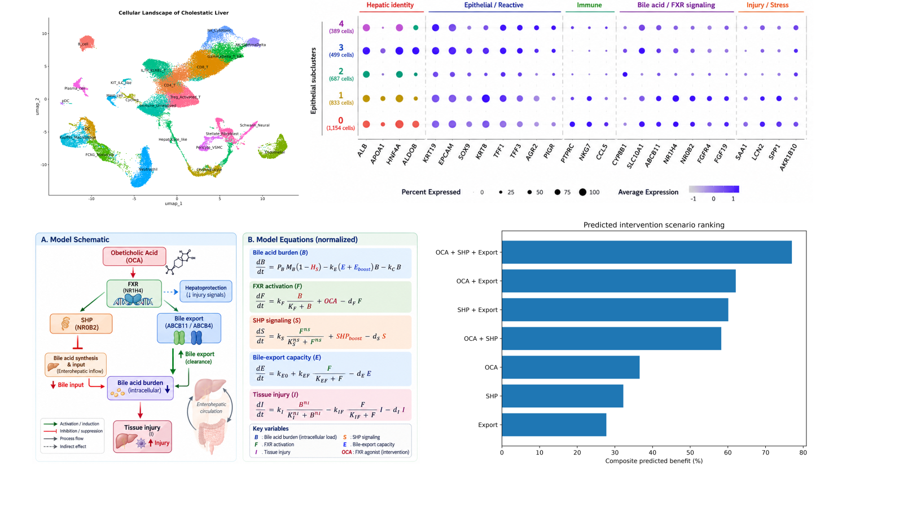
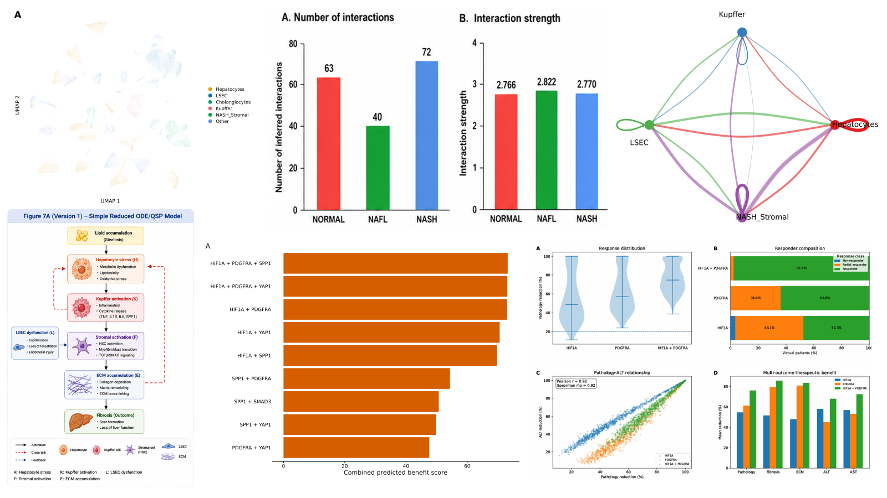
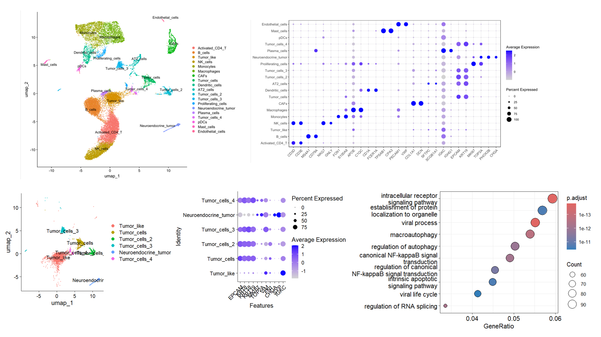
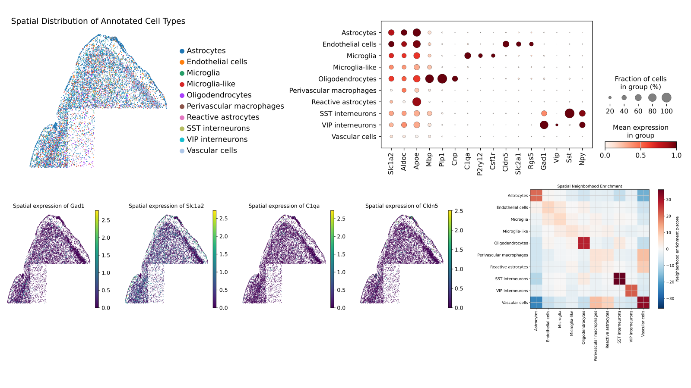
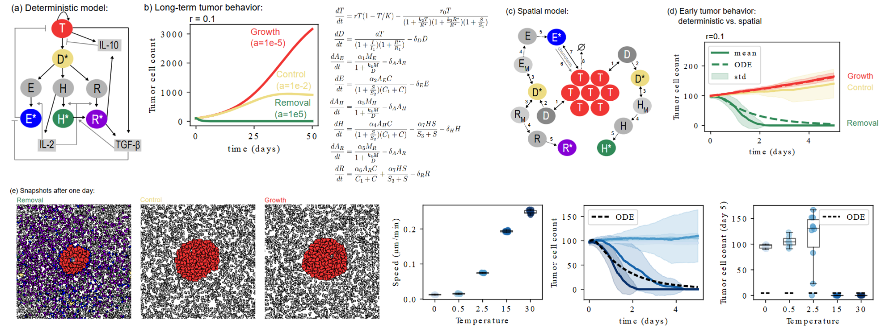

🧬 Single-Cell Genomics
Cell states, annotation, differential expression, pathways and cell–cell communication.
COMPUTATIONAL BIOLOGY · SYSTEMS BIOLOGY
I combine single-cell and spatial omics, systems biology and mechanistic modelling to understand cellular states, tissue organization, disease mechanisms and therapeutic responses.
RESEARCH
Cell states, annotation, differential expression, pathways and cell–cell communication.
Spatial neighborhoods, tissue niches and integration of molecular expression with tissue architecture.
Mechanistic ODE/PDE, agent-based modelling, parameter estimation and therapeutic simulation.
EXPERIENCE
Interdisciplinary experience at the interface of computational biology, systems biology, quantitative modelling, and experimental biomedical research.
Institute of Experimental Oncology · Bonn, Germany
Developed computational and mathematical frameworks to investigate cell signalling, cytokine communication, spatial organization, and disease-associated molecular mechanisms.
Systems Biology · Hyderabad, India
Developed computational and quantitative approaches to understand cellular signalling dynamics, calcium oscillations, cell-to-cell variability, and biological image-derived data.
SELECTED RESEARCH PROJECTS
Five representative projects spanning disease omics, spatial biology and quantitative modelling.

Integrated single-cell transcriptomics with mechanistic modelling to investigate cell states, bile-acid/FXR signalling and intervention scenarios.

Integrated single-cell analysis, communication networks and quantitative models to investigate multicellular remodeling and intervention strategies.
GitHub ↗
Characterized tumor, immune and stromal states and investigated epithelial subtypes and disease-associated pathways.

Mapped spatial cell populations, marker expression and neighborhood relationships in high-resolution tissue data.

Mathematical and spatial models connecting signalling, immune–tumor dynamics and population-level behavior.
EDUCATION
IIT Hyderabad
Osmania University
RGUKT Basar
EDUCATION
Interdisciplinary research integrating computational modelling, quantitative microscopy, cellular signalling, data analysis, and systems-level investigation of biological processes.
Advanced training in reaction engineering, mathematical modelling, transport phenomena, and quantitative analysis.
Foundation in chemical engineering, numerical methods, process modelling, mathematics, and engineering analysis.
TEACHING
I am interested in teaching interdisciplinary courses that connect biological questions with computational, quantitative, and data-driven approaches.
Foundations of biological data analysis, sequence and omics data processing, reproducible computational workflows, and biological interpretation.
Analysis of single-cell RNA sequencing and spatial transcriptomics data, including quality control, clustering, annotation, differential expression, and cell-cell communication.
Quantitative analysis of biological networks, signalling pathways, feedback regulation, and integration of experimental data with mechanistic models.
ODE/PDE models, reaction-diffusion systems, stochastic simulations, parameter estimation, and multiscale modelling of biological processes.
Practical Python and R programming for biological data analysis, visualization, statistics, workflow development, and reproducible research.
Statistical analysis, dimensionality reduction, clustering, time-series analysis, quantitative imaging, and interpretation of complex biomedical datasets.
My teaching approach emphasizes learning by doing — combining biological concepts with hands-on computational exercises, real research datasets, visualization, and reproducible analysis workflows.
PUBLICATIONS
Selected research spanning computational systems biology, quantitative imaging, calcium signalling, single-cell analysis, and computational modelling.
Peer-reviewed journal publications
Peer-reviewed international conference publications
TECHNICAL EXPERTISE
Computational methods spanning single-cell and spatial omics, systems biology, mathematical modelling, data science, and reproducible scientific computing.